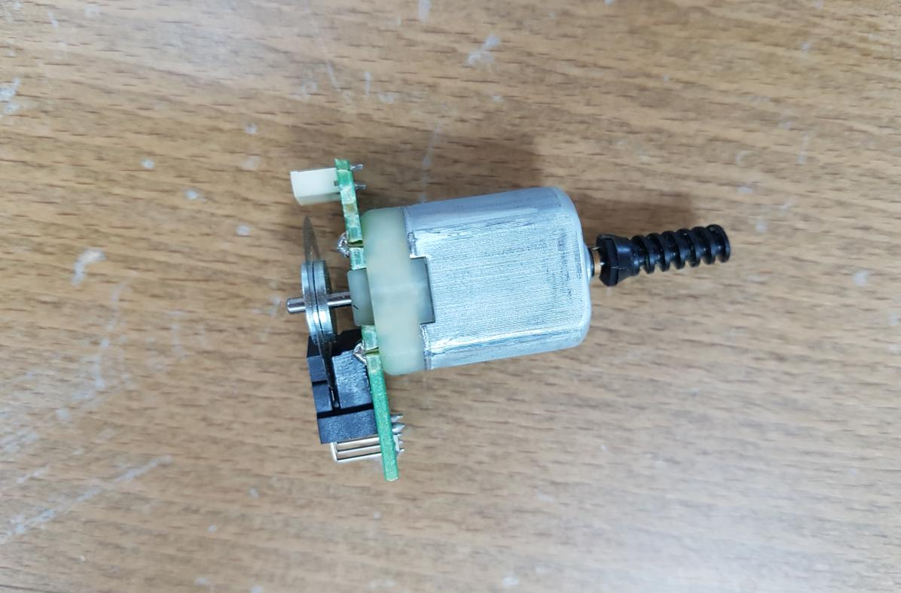
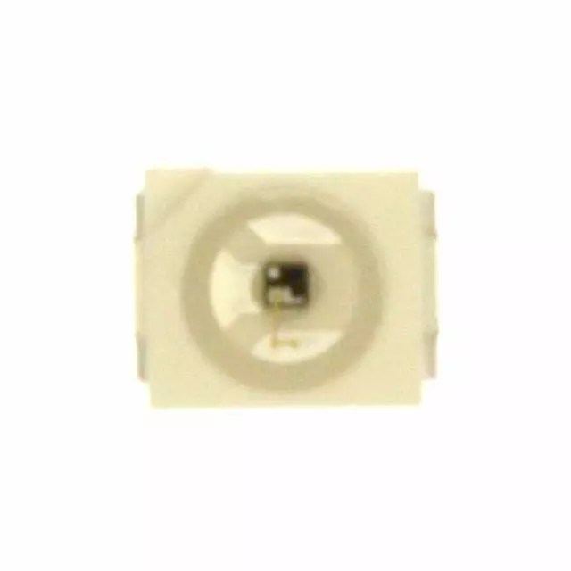
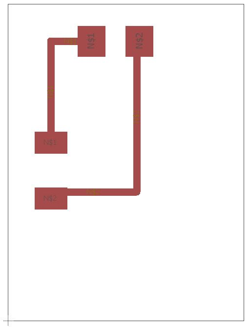
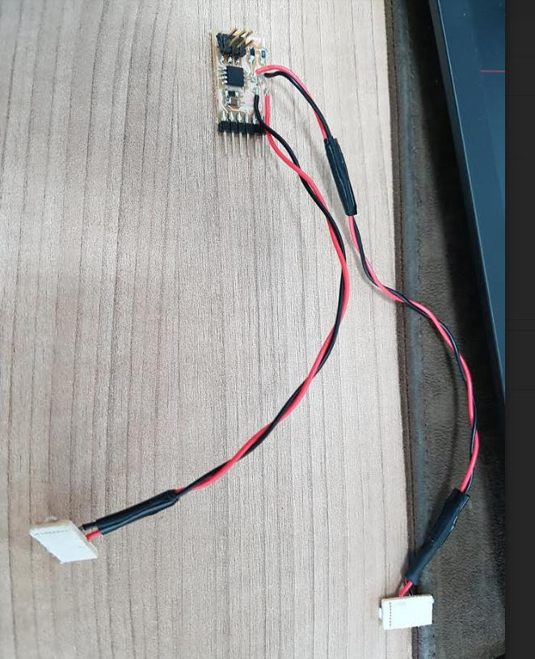
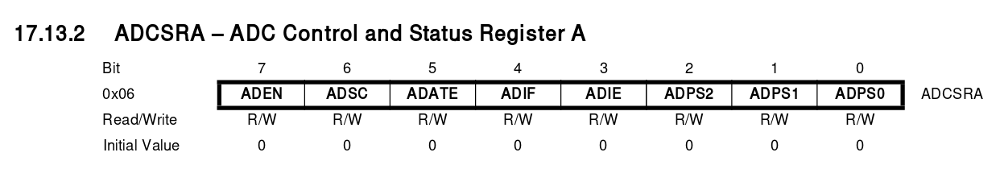
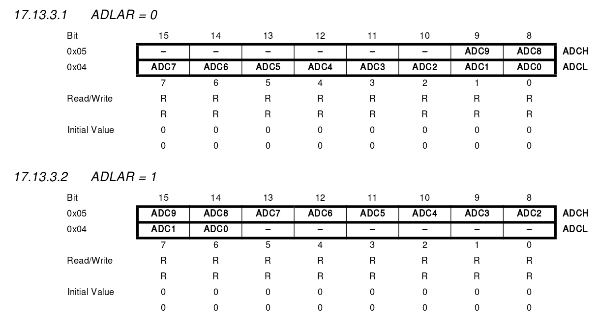
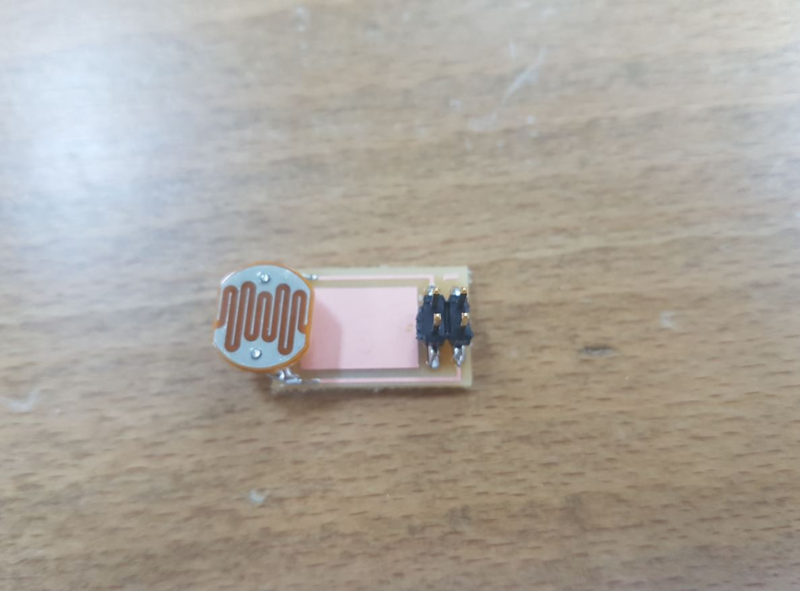

To design a circuit board that is connected to an input device and read it and display the readings.
As my final project requires rotary feedback, I will need the rotary encoder to read the feedback of the motors. I started by disassembling an old printer's motor that is connected to a rotary encoder as shown below:

While powering the circuit, I shorted the encoder circuit by mistake and the IR photodetector burned out! so I dropped this idea.
After my failed attempt, I decided to create the sensor my self specially that we have the main components required to create it. The rotary encoder consists of the encoded disk, the IR LED and the photo transistor.
I made the Encoded disk using WheelEncoderGenerator software which is shown below:

IR LED is Infra RED Light Emitting Diode that I dealt with before, I used it with IR Receiver (photo diode or photo transistor). However, the Photodarlington was new term to me so I looked it up in the internet and found it to be a darlington transistor having a phototransistor as input as per this Wiktionary article. The darlington transistor consists of two bipolar transistors connected in a way that the total current gain is the product of the gains of both transistors. The model I used is Silicon Photo Darlington in PLCC-2 Package OP580DA.

It has 2 pins which are the collector and the emitter as shown in the figure below:

 IR LED Spectral Distribution graph
IR LED Spectral Distribution graph
 IR LED Spectral Distribution graph
IR LED Spectral Distribution graph
I used Neil's hello.reflect.45 board as reference to my board design.

However I designed two separated small PCBs for the IR LED and the photodarlington so I can mount them opposite to each other.

Then I milled them and connect the pads to the main board as shown below:


| Component | Pin |
|---|---|
| IR LED | PB3 |
| Photo Darlington | PB4 |
The first thing I did was testing the IR LED. I wrote a simple IR_Blink program to blink the IR for half second. I used my phone to check the results as we, humans can see IR light! The below video shows the IR LED blinking:
As the photodarlington is outputting analog data, I will have to use the Aanalog to Digital Convertor (ADC) to read the values. I experienced that before with Arduino, analogRead() function but now I need to do it from scratch with C.
As I am using Attiny45, I went to the datasheet to check for the ADC hardware. And it turned to be that is has 10 bit ADC that has its own clock for more accurate readings. The Analog Digital Convertor documentation starts from page 122 of the datasheet. I was reading it and comparing it with Neil's Hello_light code of the input devices to have a better idea about it.
After reading Neil's code, Simply_AVR Book , Attiny45 datasheet ADC convertor section, and watching this amazing tutorial, the ADC can be configured as the following:
1- Enabling the ADC
ADCSRA |= (1 << ADEN); We can configure that by writing to the ADC Control and Status Register A ADCSRA.

2- Setting up the prescaler ADCSRA |= (1 << ADPS2) | (1 << ADPS1) | (1 << ADPS0);
According to the datasheet, the ADC requires an input clock frequency between 50 kHz and 200 kHz to get maximum resolution. The lower the better.

The prescaler can be set by configuring the ADPS0, ADPS1 and ADPS2 bits of the ADCSRA register as shown in the below table:

In my case, I will use 128 just as Neil's example as I also use the 8 MHz clock. so the ADC will be running at 8MHz/128 = 62.5 KHz.
3- Configuring the reference voltage. ADMUX |= (0 << REFS2) | (0 << REFS1) | (0 << REFS0) this will set the reference voltage to VCC. The voltage reference can be external, VCC or internal with specific values and can be configured by writing to the ADC Multiplexer Selection Register ADMUX as shown in the table below:

4- Configuring the presentation of the ADC conversion result in the ADC Data Register. According to the datasheet, if 1 is written to the ADLAR bit, the ADC result will be left adjusted, while writing 0 will make it right adjusted. Neil made it right adjusted by using ADMUX |= (0 << ADLAR). This is because the ADC in attiny45 is 10 bit and each register is 8 bit maximum so the ADC result takes 2 registers to fit the data which are ADCL and ADCH.

5- Selecting the ADC channel.
ADMUX |= (0 << MUX3) | (0 << MUX2) | (1 << MUX1) | (0 << MUX0); this will set the ADC channel to ADC3 or PB4 which is the pin that is connected to the photodarlington.

Note: All of the above configuration are done in the main() function
Using the ADC is much simpler than configuring them and of course it happens in the endless while loop.
1- Starting the conversion process ADCSRA |= (1 << ADSC); writing 1 to the ADC Start Conversion ADSC bit will start the ADC conversion process.
2- Waiting for the conversion process to finish while (ADCSRA & (1 << ADSC));
3- Using the ADC Low and High Values ADCL & ADCH
As Fransisco said, the #include <avr/io.h> allow us to use the registers, pins and everything inside the avr microcontroller with names! so we can use the ADC results ADCL & ADCH by just typing them. In Neil's example, he send them to the serial port. He started by the ADCL then the ADCH.
After going this far, I understood how the ADC convector inside the attiny works, and as I changed the final project from anyAxes to FabRover, I don't need the encoder anymore and I think it will be a waste of time. So I made a new circuit board that has an LDR and supports I2C and serial connection. I also added LED to it to clear this week assignment. The LED will turn on when there is little or no light at the room. This time I used simple ADC command instead of ADCH and ADCL that Neil used. I also used the PA0 which is ADC0 channel and according to the datasheet, I don't need to set the ADMUX register as leaving its vlaues to zero means that the refereance volatge will be VCC and the ADC channel will be ADC0.
I designed the main board using Eagle CAD. It is based on attiny44 and I did not use attiny45 because two ADC pins of the 3 ADC pins that it has are meant for the external crystal and the third ADC pin is meant for the SCK of the I2C pins so no more ADC pin to use and that is why I switched to attiny44. The below image shows the board design and the fabricated version:


Then I used Kokopeli to design a breakout for the LDR so I can mount it at the top of the Fab Rover while all the electronics are mounted inside the Fab Rover.


The setup I used for this week assignment can be shown below:

The below video shows the board working:
Finally, I am thinking of using the LDR as the input of my final project, so when the light level is low, all the motors should stop moving.